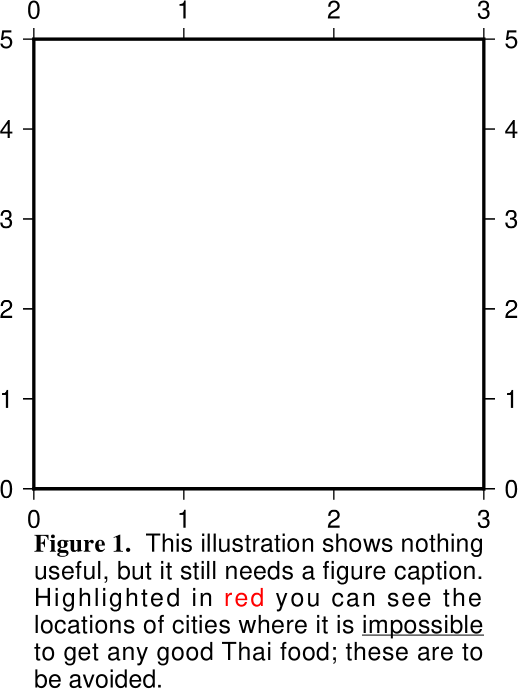

text¶
| 官方文件: | text |
|---|---|
| 簡介: | 在圖上寫文本 |
該命令用於在圖上添加文本，可以自由控制文本的大小、顏色、字體、角度。
除了可以添加鍵盤上可直接輸入的字符外，還可以通過使用轉義字符、特殊字體以及八進制碼實現希臘字母、上下標等功能，詳見 文字、轉義序列、 特殊字符。
必選選項¶
<textfiles>輸入文件。最簡單的情況下，輸入數據包括三列，其格式爲:
X Y text
示例:
echo 2 2 SHOW TEXTS | gmt text -JX10c -R0/5/0/5 -Ba -pdf test
若使用了
-F選項，則輸入數據的格式爲:x y [font angle justify] text
其中，括號內的三項是否存在以及三項的順序由
-F選項決定。
可選選項¶
-A- 默認情況下， 輸入數據中
angle是指沿水平方向逆時針旋轉的角度。-A選項表明angle是方位角，即相對於北向順時針旋轉的角度。
- -C[dx/dy][+to|O|c|C]
設置文本框與文本之間的空白區域，默認值爲字體大小的15%。該選項僅當指定了 -W 或 -G 選項時纔有效。 dx 可以是具體的距離值也可以接 % 表示空白與當前字號的百分比。例如 -C1c/1c 或 -C20%/30%。
+t 可以用於進一步控制文本框的形狀
- +to: 直角矩形 [默認值]
- +tO: 圓角矩形
- +Tc: 凹矩形（與 -M 選項一起使用）
- -TC：凸矩形（與 -M 選項一起使用）
下圖展示了 -C 選項的作用。
-D[j|J]<dx>[/<dy>][+v[<pen>]]文本在指定座標的基礎上偏移
<dx>/<dy>，默認值爲0/0即不偏移。使用text經常遇到的情況是在臺站處標記臺站名，此時傳遞給text的位置參數通常是臺站座標，因而text會將文本置於臺站座標處，該選擇用於將文本稍稍偏離臺站座標位置以避免文本擋住臺站處的符號。
- 若不指定
<dy>，則默認<dy>=<dx> -Dj<dx>/<dy>表示沿着<justify>所指定的方向偏移-DJ<dx>/<dy>表示shorten diagonal offsets at corners by sqrt(2)- 偏移量後加上
+v表示繪製一條連接初始位置與偏移後位置的直線 +v<pen>控制連線的畫筆屬性
- 若不指定
-F[+a|+A[angle]][+c[justify]][+f[font]][+j[justify]][+h|+l|+r[<first>]|+t<text>|+z<format>]控制文本的角度、對齊方式和字體等屬性。
+f<font>設置文本的字體， 見 文字+a<angle>文本相對於水平方向逆時針旋轉的角度+A<angle>force text-baselines to convert into the -90/+90 range+j<justify>文本對齊方式，見 錨點
下面的命令中，統一設置了所有文本的字號爲30p，4號字體，紅色，文本旋轉45度，且以左上角對齊:
gmt text -R0/10/0/10 -JX10c/10c -B1g1 -F+f30p,4,red+a45+jTL -pdf text << EOF 3 4 Text1 6 8 Text2 EOF
若使用了
+f子選項，但是未給定<font>，則意味着輸入數據的每一行需要自定義本行的字體屬性，因爲輸入數據的格式要發生變化。例如-F+f選項要求的輸入數據的格式爲:x y font text
對於
+a和+j同理。若+f、+a、+j中有兩個以上未在命令行中指定參數，則輸入數據中要增加多列，每列的順序由這三個子選項的相對順序決定。比如-F+f+a的輸入數據格式是:x y font angle text
-F+a+f的輸入數據格式爲:x y angle font text
-F+f+j+a表示所有數據都需要單獨指定字體、對齊方式和角度，此時輸入數據的格式爲:x y font justification angle text
-F+a+j+f與前一個例子類似，唯一的區別在於子選項的順序不同，而輸入數據的格式要與子選項的順序相匹配，此時輸入數據的格式爲:x y angle justification font text
-F+f12p,Helvetica-Bold,red+j+a爲所有行設置了統一的字體，但每一行需要單獨指定對齊方式和角度，此時輸入數據的格式爲:x y justification angle text
使用
+c<justify>選項，則輸入數據中不需要XY座標，只需要文本即可，該選項直接從-R選項中提取出範圍信息，並由對齊方式決定文本的座標位置。比如-F+cTL表示將文本放在底圖的左上角，在加上合適的偏移量即可放在任意位置。例如:echo '(a)' | gmt text -R0/10/0/10 -JX10c/10c -B1 -F+cTL -Dj0.2c/0.2c -pdf text
通常來說，要繪製的文本都來自於輸入數據的某一列。對於多段數據而言，還可以使用其他子選項來設置文本的來源：
+h會直接從多段數據的段頭記錄中提取文本:gmt text -R0/10/0/10 -JX10c/10c -B1 -F+h -pdf text << EOF > TEXT1 2 2 > TEXT2 5 5 EOF
+l會直接從多段數據的段頭記錄裏的-L<label>中提取信息:gmt text -R0/10/0/10 -JX10c/10c -B1 -F+l -pdf text << EOF > -LTEXT1 2 2 > -LTEXT2 5 5 EOF
+r<first>會使用記錄號作爲文本（記錄號從<first>起算）+t<text>設置使用一個固定的字符串+z<format>將 Z 值以特定的格式輸出爲字符串，默認格式由 FORMAT_FLOAT_MAP 控制
-G設置文本框的填充色。
除了設置填充色之外，
-G選項還有兩個高級用法，即-Gc和-GC。其中，-Gc表示先繪製文本，然後將文本框裁剪出來，並打開裁剪選項，之後的繪圖命令都不會覆蓋文本所在區域，最後需要使用 clip 的-C選項關閉裁剪。若不想要繪製文本只想要激活裁剪選項，可以使用-GC選項。-L用於列出GMT所支持的所有字體名及其對應的字號:
gmt text -L
-M段落模式，用於輸入大量文本。
輸入文件必須是多段數據。數據段頭記錄的格式爲:
> X Y [font angle justify] linespace parwidth parjust
- 第一個字符是數據段開始標識符，默認爲
> - 從第三列開始，包含了本段文本的設置信息
font angle justify是可選的，由-F選項控制linespace行間距parwidth段落寬度parjust段落對齊方式，可以取爲l（左對齊）、c（居中對齊）、r（右對齊）、j（分散對齊）
段頭記錄後即爲要顯示在圖上的文本，每段數據之間用空行分隔。
#!/bin/bash gmt begin text_-M png,pdf gmt text -R0/3/0/5 -JX3i -F+f+a+j -B1 -M -N << EOF > 0 -0.5 12p,black 0 LT 13p 3i j @%5%Figure 1.@%% This illustration shows nothing useful, but it still needs a figure caption. Highlighted in @;255/0/0;red@;; you can see the locations of cities where it is @_impossible@_ to get any good Thai food; these are to be avoided. EOF gmt end
段落模式示意圖
- 第一個字符是數據段開始標識符，默認爲
-N位於地圖邊界外的文本也被繪製。
默認情況下，若文本超過了底圖邊框，則不顯示該文本，即文本被裁剪掉了。使用
-N選項，即便文本超出了底圖邊框的範圍，也依然會顯示。-Ql|u- 所有文本以小寫（lower case）或大寫（upper case）顯示
-W<pen>- 設置文本框的邊框屬性，默認值爲
default,black,solid -Z3D投影中，需要在數據的第三列指定文本的Z位置，數據格式爲:
X Y Z Text
此時強制使用
-N選項。
{kind=link}
- -U[label][+c][+jjust][+odx/dy] (more …)
- 在图上绘制GMT时间戳logo
- -t[transp] (more …)
- 设置图层透明度（百分比）。取值范围为0（不透明）到100（全透明）
示例¶
下面的例子中設置文本框的相關屬性：藍色邊框、淡藍填充色、圓角矩形，空白爲 100%/100%
gmt text -R0/10/0/5 -JX10c/5c -B1 -Wblue -Glightblue -TO -C100%/100% -pdf text << EOF
3 1 Text1
6 3 Text2
EOF